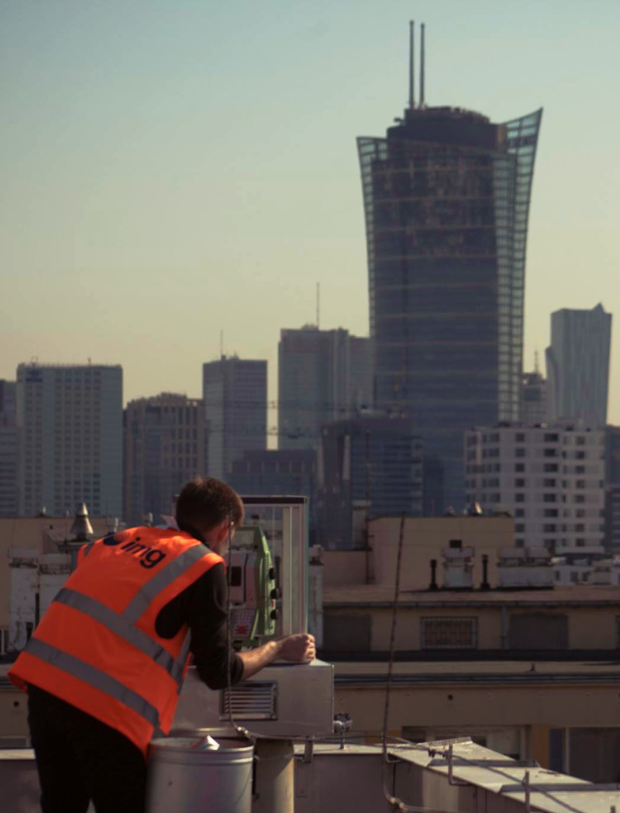

O mnie
Aktualnie pracuję jako Asystent Projektanta Geotechnicznego w firmie Strabag w Krakowie.
Ukończyłem Akademie Górniczo-Hutniczą z tutułem Magistra Inżyniera na kierunku Budownictwo w specjalności Geotechnika i Budownictwo Specjalnie. W czasie swojej edukacji miałem możliwość zdobyć doświadczenie naukowe i rozwinąć umiejętności językowe podczas wymiany zagranicznej Erasmus w Niemczech. Moją karierę zawodową rozpocząłem 5 lat temu jako Inżynier Geotechnik na budowie tunelu pod Małym Luboniem w ciągu drogi ekspresowej S7. Kolejnym etapem była praca jako Asystent Projektanta przy projektach mostowych i kolejowych w firmie JPL w Krakowie. Poprzednio pracowałem w firmie Jacobs, gdzie miałem okazję podnosić swoje kwalifikacje związane z projektowaniem geotechnicznym w środowisku międzynarodowym. Jestem zaznajomiony z projektowaniem geotechnicznym zgodnie z Eurokodem oraz obowiązującymi normami i przepisami. Posiadam zdolność do interpretacji rysunków technicznych. Sprawnie posługuję się oprogramowaniem komputerowym do projektowania geotechnicznego oraz strukturalnego. Jestem zmotywowany do poszerzenia swojej wiedzy z zakresu geotechniki oraz konstrukcji. Posiadam uprawnienia projektowe konstrukcyjne bez ograniczeń.
Obecnie jestem studentem ostatniego roku studiów niestacjonarnych pierwszego stopnia na kierunku Informatyka na Politechnice Krakowskiej na wydziale Inżynierii Elektrycznej i Komputerowej. Podczas nauki na studiach mam możliwość rozwoju swojej wiedzy w szeroko pojętej branży IT, która dotyczy zwłaszcza budowy i działania systemów operacyjnych, architektury systemów komputerowych, programowania w obiektowych językach programowania, baz danych i sieci komputerowych oraz grafiki komputerowej. Zdobytą wiedzę sprawnie wykorzystuję w obecnej firmie poprzez wykonywanie skryptów, które pomogają optymalizować procesy w codziennej pracy. Rozwijam umiejętności programowania w Java, Python i VBA.
W czasie wykonywanej pracy zawodowej mogłem rozwinąć szereg umiejętności miękkich takich jak umiejętność pracy pod presją czasu i odporność na stres, komunikatywność oraz umiejętność pracy w zespole. Cechuje mnie świetna organizacja pracy oraz zdolność do pracy w środowisku międzynarodowym.



![]()